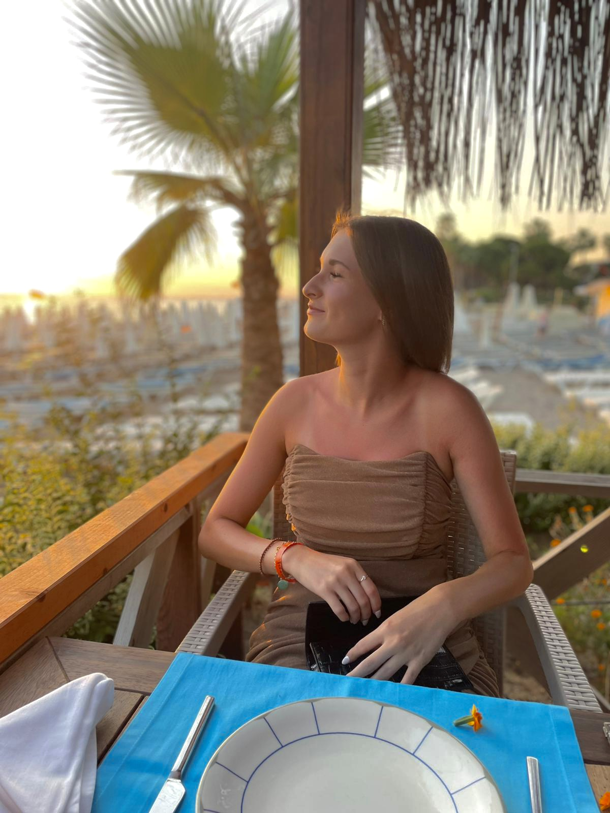

Hallo, ich bin Diana Wolf
Ich studiere Medienkonzeption an der Hochschule in Furtwangen. Ich liebe es, neue Dinge auszuprobieren, Momente einzufangen und Ideen zum Leben zu erwecken. Besonders hinter der Kamera fühle ich mich Zuhause. Fotografie ist mein persönlicher Ausdruck von Kreativität und mehr als nur ein Bild. Sie ist meine Art, die Welt zu sehen, Emotionen zu zeigen und Augenblicke für immer festzuhalten.
Was mich ausmacht
- Leidenschaft für Ästhetik und Gestaltung
- Vielfältige kreative Projekte
- Starke Verbindung zwischen Technik und Kreativität